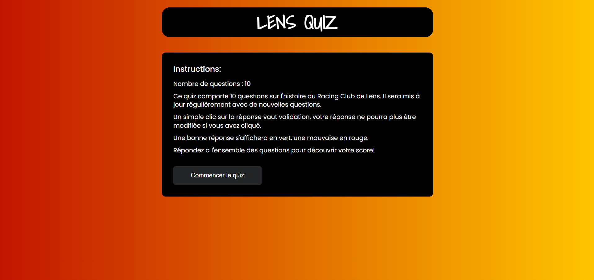

Mes projets
Bienvenue dans la section Projets de mon portfolio ! Ici, vous trouverez une collection de réalisations qui témoignent de mon parcours d'apprentissage en développement web. Au fil de mon exploration autodidacte des langages HTML, CSS et JavaScript, j'ai créé plusieurs projets diversifiés pour mettre en pratique mes compétences émergentes.
Chacun de ces projets est le fruit de nombreuses heures d'engagement, de résolution de problèmes et d'expérimentation. J'ai également exploré l'utilisation de bibliothèques et d'outils modernes pour améliorer mes projets, notamment Tailwind CSS pour son efficacité et sa simplicité.
Dans deux de mes réalisations, j'ai intégré des appels à des API externes pour enrichir l'expérience utilisateur. Une application météo vous permet de consulter les prévisions météorologiques actuelles partout sur la planète, tandis qu'une autre se connecte à l'API de la NASA pour afficher des images captivantes du robot Mars Rover Curiosity.
Chaque projet présenté ici est une occasion pour moi d'appliquer mes connaissances nouvellement acquises, de relever des défis techniques et de perfectionner mes compétences en développement web. Explorez ces réalisations avec moi et découvrez le fruit de mon travail acharné et de ma passion pour la programmation web.
Les projets sont mis en ligne grâce au service "Firebase" de Google.
Blink-182-fr

"Blink-182-fr" est un site réalisé sur un groupe de musique. Il s'agit du premier projet que j'ai développé dans le cadre de mon apprentissage du HTML et du CSS. J'ai utilisé Tailwind pour me faciliter la mise en page et le responsive. Il comporte un peu de JavaScript pour l'interactivité du menu "hamburger" sur les petits écrans.
Dans le cadre de l'apprentissage du JavaScript, j'ai souhaité réaliser un jeu sous forme de quiz afin de pouvoir travailler sur de nombreux aspects du langage. Ce quiz est basé sur l'histoire d'un club de football.
Lens Quiz
Lorsque j'ai découvert le concept d'API, j'ai souhaité développer une application web météo afin de pratiquer les appels API et l'intégration des résultats obtenus dans le HTML. L'application demande l'accord à l'utilisateur pour accéder à sa géolocalisation, mais l'utilisateur peut également rechercher la ville de son choix pour en obtenir la météo en temps réel.
Pour poursuivre la découverte des API, j'ai souhaité m'entraîner sur celle de la NASA. J'ai donc conçu un site qui permet à l'utilisateur d'accéder aux photographies réalisées sur Mars par le robot Curiosity. La recherche de photos s'effectue par date, il suffit de sélectionner une date pour que le site affiche l'ensemble des photos transmises par le robot à la date choisie.
Mars Pictures